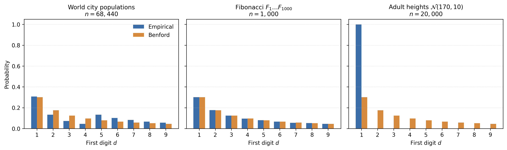
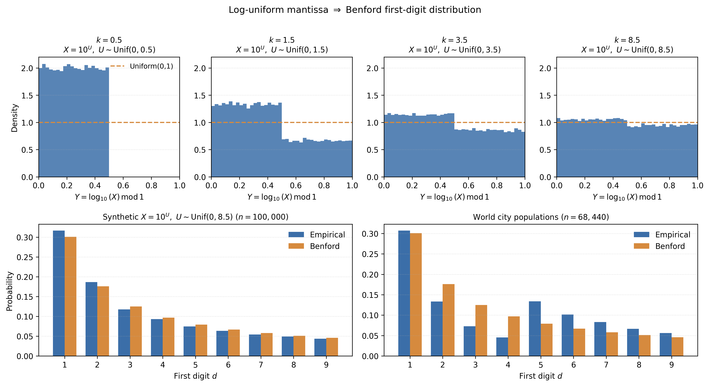
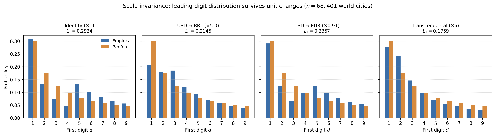
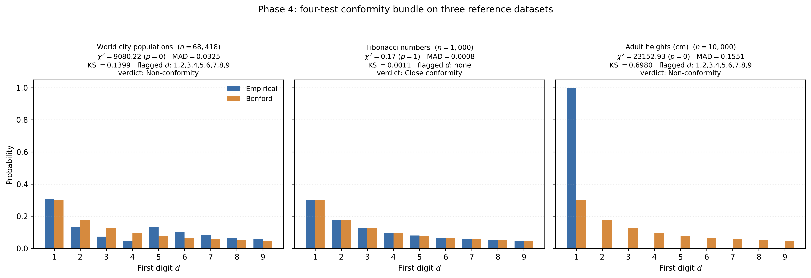
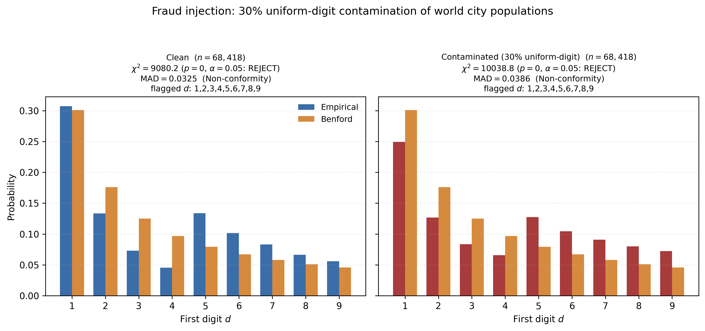
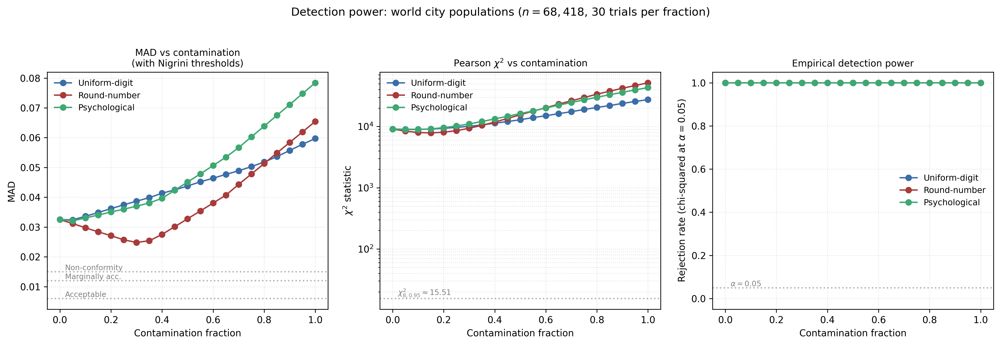

Benford's Law: two derivations, four tests, one fraud detector
The first digit of "natural" numerical data is not uniform but logarithmic: $P(d) = \log_{10}(1 + 1/d)$, so a leading 1 occurs about 30% of the time and a leading 9 less than 5%. This TIL gives two independent rigorous derivations, four conformity tests, and an end-to-end fraud-detection demo.
Why I'm writing about this
I recently reread The Drunkard's Walk and stumbled again on the paragraph where Mlodinow mentions, almost in passing, Benford's Law — the uncomfortable idea that the first digit of "any" natural dataset is not uniformly distributed but follows a logarithmic curve. On first reading I had accepted the fact as a curiosity; this time I wanted to understand why. What began as a margin note turned into this TIL: an honest attempt to reconstruct the law from two independent arguments, watch the data fit the curve, and close the loop with a concrete application — fraud detection. What follows is the clean notebook of that rereading.
1. The worn pages of a logarithm table
In 1881 the astronomer Simon Newcomb noticed something odd while flipping through his copy of a book of logarithms. The early pages — those for numbers starting with 1 — were filthy and dog-eared; the later pages, for numbers starting with 9, were crisp and clean. A logarithm table is the most stubbornly mechanical of references. There is no plot, no narrative, no way for some chapters to be more interesting than others. So why were the early pages worn out?
Newcomb wrote a two-page note in the American Journal of Mathematics arguing that the first significant digit of "natural" numerical data is not uniform but logarithmic:
$$ P(d) = \log_{10}\left(1 + \frac{1}{d}\right), \qquad d = 1, 2, \ldots, 9. $$
The leading 1 should appear about 30.1 % of the time, the leading 9 less than 5 %. Newcomb's "proof" was a heuristic about the mantissa of a random number being uniform; he gave no formal argument and no empirical data, and the note slid into obscurity.
Frank Benford rediscovered the regularity in 1938 from the opposite end. A physicist at General Electric, he tabulated leading digits across twenty unrelated datasets — river lengths, atomic weights, baseball statistics, the surface areas of countries — and showed that the same logarithmic curve fit them all. Benford did not derive the formula either; what he provided was the empirical mass of evidence Newcomb had skipped. The pattern got his name, not Newcomb's.
The mathematical justification waited until 1961, when Roger Pinkham proved that any leading-digit law that does not depend on the unit of measurement must be the Benford curve. That argument — scale invariance forces the law — is what makes Benford more than a folk theorem. It is the reason this TIL exists: the same logarithmic distribution appears in two unrelated derivations, one probabilistic and one structural, and the fact that they meet is the strongest possible evidence that the law is not a coincidence.
The rest is detail.
2. Empirical Benford in three datasets
Before any derivation it is worth pausing on the data. Benford lined up twenty heterogeneous datasets to show the logarithmic curve was empirical rather than invented; I will repeat the gesture at smaller scale with three datasets chosen to cover three distinct regimes. The first is a messy real-world case — world city populations — where the generating process is multiplicative and spans several orders of magnitude. The second is a clean analytic sequence — Fibonacci — where Benford appears as a theorem rather than as luck. The third is a deliberate negative control — adult heights — where the law should not appear, and the corresponding panel pins down what fails when the multiplicative regime is dropped. The figure below overlays, in each panel, the empirical first-digit frequency (blue) and the theoretical Benford PMF (orange); the reader should look for the two series tracking each other in the first and second panels, and for the glaring discrepancy in the third.

World city populations. The bundled GeoNames cities5000 snapshot lists about 68,000 cities with at least 5,000 inhabitants. The empirical $\hat P(1) \approx 0.31$, $\hat P(9) \approx 0.06$, monotonically decreasing apart from a small spike at $d = 5$ (an artefact of the 5,000-population cutoff — every city just over the threshold has a leading 5). This is the canonical example: real geographic data spanning many orders of magnitude (from $10^3$ to $10^7$), drawn from the same multiplicative growth process across continents.
Fibonacci numbers. $F_1, \ldots, F_{1000}$, computed via Binet's closed form. The first-digit distribution is exactly Benford in the limit: Weyl's equidistribution theorem says the fractional part of $n \log_{10}(\varphi)$ is equidistributed on $[0, 1)$, and §3 will turn that into the Benford PMF directly. Even at $n = 1000$ the empirical fit is within about 4 % per cell.
Adult heights. Synthetic, $n = 10{,}000$, $\mathcal{N}(170, 10)$ centimetres. Not Benford: with practically every value between 150 and 190 cm, every value starts with 1, and the corresponding panel of the figure shows exactly that — a single tall blue bar at $d = 1$ and zeros for every other digit, while the orange Benford curve fans out from $1$ to $9$. The visual contrast is the point: that lone bar is what an additive, single-order-of-magnitude dataset looks like, well outside the regime where the law applies. $\hat P(1) > 0.55$ and several digits are absent entirely. This is the negative control — the class of data Benford explicitly does not apply to.
The three curves capture the operating range. Benford appears wherever the data span several orders of magnitude multiplicatively. It fails where the data live on an additive scale of similar quantities (heights, IQ scores, exam grades). The next two sections derive the mathematical reason for this divide.
3. First derivation: the mantissa is uniform on $[0, 1)$
Newcomb's original intuition was geometric: the first digit of a number depends only on where the number falls inside a "decade" — the interval between two consecutive powers of ten. To make that intuition precise we need a coordinate that sees only this relative position and ignores the order of magnitude. The logarithm does exactly that, and the entire derivation falls out of it in a few steps.
Write any positive real $X$ in scientific notation:
$$ X = r \cdot 10^k, \qquad r \in [1, 10), \quad k \in \mathbb{Z}. $$
The factor $r$ is the mantissa and $k$ the order of magnitude. The first significant digit of $X$ is just $\lfloor r \rfloor$ (the floor function, which returns the greatest integer less than or equal to $r$); we denote this operation by $D(X) := \lfloor r \rfloor$ and, when $X$ is random, treat $D$ as a derived random variable — it is the object whose distribution we are trying to find. All the information relevant to our question lives in $r$: multiplying $X$ by a power of ten changes $k$ but leaves $r$, and therefore the first digit, untouched. Taking logarithms turns that fact into algebra:
$$ \log_{10}(X) = \log_{10}(r) + k, \qquad \log_{10}(r) \in [0, 1). $$
The order of magnitude $k$ becomes the integer part of the logarithm, and the fractional part carries all the information about the first digit. That fractional part deserves a name. Define the log-mantissa $Y = \log_{10}(X) \bmod 1$. By construction $Y \in [0, 1)$, and the interval $[0, 1)$ partitions naturally into nine subintervals, one per leading digit:
$$ D(X) = d \iff \log_{10}(d) \le Y < \log_{10}(d + 1). $$
The length of the $d$-th subinterval is exactly $\log_{10}(d+1) - \log_{10}(d) = \log_{10}(1 + 1/d)$ — Benford's formula is already there, waiting for a probability measure that weighs these lengths. Up to here, however, everything is translation: no probability has been introduced. The next step is the one place in the argument where a substantive assumption enters.
Premise (log-uniform mantissa). Assume the log-mantissa $Y$ is uniformly distributed on $[0, 1)$, i.e.,
$$ Y \sim \mathrm{Uniform}(0, 1). $$
Under this premise, the probability that $Y$ falls inside a subinterval is literally the length of that subinterval. The first-digit distribution falls out of a single line:
$$ P(D = d) = \Pr[\log_{10}(d) \le Y < \log_{10}(d + 1)] = \log_{10}(d + 1) - \log_{10}(d) = \log_{10}\left(1 + \frac{1}{d}\right). $$
That is the entire derivation. What looks like a sleight of hand is structural: by trading the multiplicative coordinate $X$ for the additive coordinate $Y$, we have turned the question "what is the first digit?" into a question about lengths on the circle $[0, 1)$, and uniform probability on that circle translates directly into the logarithmic curve.
The figure below makes the argument tangible in two movements. In the top row, the histogram of the log-mantissa $Y$ for synthetic samples $X = 10^U$ with $U \sim \mathrm{Uniform}(0, k)$ is shown for $k = 0.5,\, 1.5,\, 3.5,\, 8.5$ — deliberately non-integer values, so that the convergence is visible. At $k = 0.5$, $Y$ does not even cover $[0, 1)$ (all mass sits on $[0, 0.5)$); at $k = 1.5$, a clear step at $Y = 0.5$ remains (density $\approx 1.33$ on the first half against $\approx 0.67$ on the second); at $k = 3.5$ the step is gentler; at $k = 8.5$ the histogram is visually flat. The deviation from uniform decays as $1/k$. In the bottom row, the first-digit frequencies of the synthetic $k = 8.5$ sample (left) and of world city populations (right) sit on top of the Benford PMF: the premise implies the curve, and real multi-scale data satisfies the premise.

The substantive question is why the premise should hold. Three arguments:
Multiplicative processes. Many natural quantities are products of independent factors: a city's population at year $t$ is $p_0 \prod_i (1 + r_i)$ for growth rates $r_i$. Taking logs turns the product into a sum, and the central limit theorem makes $\log_{10}(X)$ approximately Gaussian — but with a variance that grows with the number of factors. As the variance grows, the fractional part $Y$ approaches uniform on $[0, 1)$ regardless of where the mean sits. Most of Benford's twenty datasets are multiplicative in this sense.
Equidistribution. For a deterministic sequence like $X_n = a^n$ with $\log_{10}(a)$ irrational, Weyl's equidistribution theorem says the fractional part of $n \log_{10}(a)$ is equidistributed on $[0, 1)$. The first-digit empirical distribution converges exactly to Benford. Fibonacci is the cleanest example: $F_n \sim \varphi^n / \sqrt{5}$, and $\log_{10}(\varphi)$ is irrational.
Measure-theoretic uniqueness. Translation-invariant probability measures on the circle $\mathbb{R}/\mathbb{Z}$ are unique up to normalisation (Haar measure). Section 4 turns this remark into Pinkham's derivation.
The premise is load-bearing: if the log-mantissa is not uniform, the first-digit distribution is whatever follows from the actual density of $Y$. A Gaussian $X$ centred at $\log_{10}(170) \approx 2.23$ — adult heights in centimetres — produces a $Y$-density sharply peaked near $0.23$, which corresponds to a first digit pinned at $1$. The 55 % leading-1 frequency in §2's heights dataset is exactly this effect made visible.
So the first derivation answers the question "given a log-uniform mantissa, what is the first-digit law?" — but not "why should the mantissa be log-uniform?" That is the gap Pinkham closes.
4. Second derivation: scale invariance forces $1/x$
Currency is the cleanest motivation. Take a dataset of revenues in BRL. Convert to USD by multiplying every entry by some exchange rate $c$. The leading-digit distribution should not change just because we relabelled the unit — the dollar and the real are arbitrary tags, and the underlying economic activity does not know which one we picked. That informal expectation is a symmetry claim about the data, not a statistical one. Formally:
Scale invariance. For every $c > 0$ and every digit $d$ from $1$ to $9$,
$$ \Pr[D(cX) = d] = \Pr[D(X) = d]. $$
This is a strong constraint. It rules out, for example, the uniform distribution on digits — uniform under one currency will not be uniform after multiplying every value by $\pi$. Even before any derivation, the requirement already narrows the candidate distributions sharply.
The natural move is again to pass to logs, because logs turn multiplication into addition. With $Y = \log_{10}(X) \bmod 1$ and $\alpha = \log_{10}(c) \bmod 1$, the operation $X \mapsto cX$ becomes $\log_{10}(X) \mapsto \log_{10}(X) + \log_{10}(c)$, which on the log-mantissa is a translation:
$$ Y \mapsto (Y + \alpha) \bmod 1. $$
As $c$ ranges over $(0, \infty)$, $\log_{10}(c)$ ranges over all of $\mathbb{R}$, so $\alpha = \log_{10}(c) \bmod 1$ takes every value in $[0, 1)$. Scale invariance of $X$ is therefore equivalent to translation invariance of $Y$ on the circle $\mathbb{R}/\mathbb{Z}$. And there is exactly one translation-invariant probability distribution on the circle: the uniform distribution. The intuition is symmetry — any other distribution would have a "preferred point" that translation would move, contradicting invariance. (Formally, this is the uniqueness of Haar measure on a compact group.)
Scale invariance therefore forces $Y \sim \mathrm{Uniform}(0, 1)$, which by §3 forces the Benford PMF. The argument is clean enough to deserve a name; it is Pinkham's theorem.
A complementary route works directly with the density on $X$ rather than passing through the log-mantissa, and is worth seeing because it makes the $1/x$ shape explicit. Under $X \mapsto cX$ a probability density transforms as $f(x) \mapsto \frac{1}{c} f(x/c)$. Demanding that this equal $f(x)$ for every $c > 0$ forces $f(x) \propto 1/x$. So on a finite window $[a, b] \subset (0, \infty)$ the only probability density invariant under multiplication is
$$ f(x) = \frac{1}{x \log(b/a)}. $$
Restricting to $[10^k, 10^{k+1})$,
$$ P(D = d) = \int_{d \cdot 10^k}^{(d+1) \cdot 10^k} \frac{1}{x \ln 10}\, dx = \log_{10}\left(1 + \frac{1}{d}\right). $$
The factor $10^k$ cancels. That cancellation is the scale invariance, made arithmetic: the leading-digit probability does not depend on which decade we restrict to.

Two corollaries worth flagging:
Base invariance. Repeating the derivation in base $b > 1$ gives $P_b(d) = \log_b(1 + 1/d)$ for $d = 1, 2, \ldots, b-1$. In octal, $P_8(1) = \log_8 2 = 1/3$, slightly more than the decimal $P_{10}(1) \approx 0.301$. Same shape, different support. The choice of base 10 is a notational artefact; the law is structural.
Why two derivations matter. §3 starts from a probabilistic premise (log-uniform mantissa) and lands on $\log_{10}(1 + 1/d)$. §4 starts from a structural premise (no preferred unit) and lands on $\log_{10}(1 + 1/d)$. §4 implies §3's premise, so the two are not literally independent — but they are structurally different. The fact that two unrelated assumptions converge on the same formula is the strongest evidence that the law is not an empirical accident.
The next question is operational: given a real dataset, how do we test whether it conforms?
5. Testing conformity: $\chi^2$, KS, MAD, $Z$
The law is structural, but real data only approximately satisfies the premise — a finite sample never sits exactly on the Benford curve, and even multi-decade datasets carry a residual ripple. So an empirical question always remains: how close is close enough to call the data conforming, and what kind of deviation are we worried about? Different audiences want different gaps — a hypothesis tester wants a p-value, an auditor wants a verdict scale that does not collapse at industrial sample sizes, a detective wants to know which digit is off. No single statistic answers all three, so the standard practice is to run a small bundle. Four tests, four sensitivities. Take an empirical first-digit distribution $\hat P(1), \ldots, \hat P(9)$ on a sample of size $n$ and ask: how close is it to the Benford PMF (the probability mass function $P(d) = \log_{10}(1 + 1/d)$, $d = 1, \ldots, 9$)?

The figure is the catalog: three reference datasets (one real-and-conforming, one synthetic-and-conforming, one synthetic-and-failing), each panel carrying all four test outcomes in its title. There are three panels, not four — one per dataset; the four tests are reported per panel. The layout mirrors how the bundle is used in practice: one dataset, four numbers, one verdict.
Pearson $\chi^2$. Treat the count vector $(O_1, \ldots, O_9)$ as multinomial with parameters $(n; P(1), \ldots, P(9))$ under the null. The test statistic
$$ \chi^2 = \sum_{d=1}^{9} \frac{(O_d - n P(d))^2}{n P(d)} $$
is asymptotically $\chi^2_8$ — the constraint $\sum_d O_d = n$ removes one degree of freedom from the nine cells. Reject at $\alpha = 0.05$ if $\chi^2 > 15.51$. Chi-squared is the honest hypothesis test for moderate $n$, but it has a known defect: at very large $n$ (on the order of $10^6$), even microscopic deviations (about $0.001$ per cell) become "statistically significant". The test answers "is the deviation literally zero?", which is rarely the question of interest in practice. That defect is what motivates the next two statistics.
Kolmogorov–Smirnov. $D_n = \max_d |F_n(d) - F(d)|$, where $F$ is the cumulative Benford CDF. Sensitive to systematic drift across the cells in a way $\chi^2$ averages away — if the deviation is concentrated as a step or a ramp rather than scattered, KS notices and $\chi^2$ may not. The asymptotic Kolmogorov distribution gives a p-value via $\sqrt{n}\, D_n$, but it is conservative on a discrete distribution — useful as a diagnostic, not as a sharp test. KS still inherits the large-$n$ inflation problem, which is what MAD addresses.
MAD with Nigrini's thresholds. The simplest statistic, $\mathrm{MAD} = \tfrac{1}{9} \sum_d |\hat P(d) - P(d)|$, is sample-size invariant: a given proportion vector yields the same value at $n = 1{,}000$ or $n = 10^7$. Mark Nigrini's Benford's Law (Wiley, 2012) calibrates a verdict scale: $< 0.006$ "close conformity"; $< 0.012$ "acceptable"; $< 0.015$ "marginally acceptable"; $\ge 0.015$ "non-conformity". MAD has no formal sampling distribution and no p-value — but it is the only one of the four that scales sensibly to forensic-audit datasets where $n \gg 10^5$. The price is that MAD aggregates across the nine cells, so it cannot tell you where the deviation lives — that is the job of the last test.
Per-digit $Z$. For each $d$, treat $O_d \sim \mathrm{Binomial}(n, P(d))$ and compute the standardized two-sided $z_d$ (with Yates' continuity correction). Reject at $\alpha = 0.05$ if $|z_d| > 1.96$. Per-digit $Z$ does not control the family-wise error rate across the nine cells — it is a diagnostic: if cell 1 alone is flagged, the data are short of leading 1s; if cells 8 and 9 are flagged, the data show round-number bias.
Each test answers a different question, so the rule for choosing is to match the question to the test:
| Question | Test |
|---|---|
| Honest hypothesis test, moderate $n$ | $\chi^2$ |
| Cumulative drift across cells | KS |
| Forensic-scale audit, $n \gg 10^5$ | MAD |
| Which digit is off? | per-digit $Z$ |
In practice, run all four — they cost almost nothing on top of computing $\hat P$ once, and each catches a kind of deviation the others miss. The implementation is src.conformity.conformity_report.
6. Fraud demo: when fabricated numbers betray themselves
§5 set up the conformity bundle on clean data; §6 puts it to work in an adversarial setting. Take a clean Benford-conforming dataset, replace a fraction of its entries with fabricated values, and watch the four-test bundle cross from accept to reject. The setup is deliberately stylised — there is no real fraudster on the other side, and we control everything — but it is the cleanest way to see what kind of contamination the bundle catches and what it lets through. The point is not to prove that the bundle works; it is to read off where its threshold sits.

The before-and-after figure shows the same GeoNames cities5000 dataset ($n \approx 68{,}000$) before contamination, on the left, and after replacing 30 % of its entries with fabricated values, on the right. The Benford curve does not move; what moves are the empirical bars, and the bundle reads off the gap.
The fabricated batch is calibrated to look superficially plausible: drawn over the same magnitude window as the original data, so the fraud signal lives in the digit distribution and not in the order of magnitude. This is the realistic threat model — a fraudster who copies the right scale and gets the digits wrong, not one who invents nine-digit revenues for a small business. Three fabrication strategies are implemented in src.fraud:
- Uniform-digit. Each leading digit appears in about $11.1\,\%$ of the entries. The textbook violation — the easiest to catch because it scrambles the curve everywhere at once.
- Round numbers. Values cluster at $100, 200, 250, 500, 1{,}000, 2{,}000, 5{,}000, 10{,}000$, mimicking the fraudster who rounds mentally. Subtle, because round numbers preserve a leading-digit bias of their own.
- Psychological. Humans asked to write "random" numbers over-pick the mid digits 3–6 and under-pick 1 and 9 — a reproducible cognitive bias documented in the experimental literature.
Each strategy is a different attack on the curve, so each gives the bundle a different stress test. To turn that into a single picture of detection power, sweep the contamination fraction from 0 % to 100 % and run the four-test bundle 30 times at each level. The result is the detection-power curve:

The MAD curve climbs through Nigrini's verdict tiers (acceptable → marginally acceptable → non-conformity) within the first 5–10 % of contamination. The Pearson $\chi^2$ statistic — log-scale — climbs steeply through its $\alpha = 0.05$ critical value of 15.51 at roughly the same point. The empirical rejection rate at $\alpha = 0.05$ saturates near 1 for all three fabrication kinds by 10–15 % contamination.
The reading: at this sample size, a Benford-style audit reliably detects fraud whenever 10 % or more of the entries are fabricated by any of the three strategies. Below 5 %, detection power varies — round-number fabrication is the hardest to catch because it preserves the leading-digit bias of Benford while displacing it onto digits $1$, $2$ and $5$. The bundle is not a magic detector; it is a coarse filter that flags gross contamination cheaply and leaves the auditor to decide where to look closer.
This experiment is not just a toy. Documented historical cases include:
- Greek fiscal statistics (2010). Rauch, Göttsche, Brähler & Engel (2011, German Economic Review) applied first-digit analysis to EU member-state macroeconomic deficit reports for 1999–2009 and found Greece the only state whose deficit reports significantly violated Benford's Law — published months before official acknowledgment of statistical manipulation.
- 2009 Iranian presidential election. Multiple post-hoc analyses (Mebane and follow-up work) found anomalies consistent with Benford-style irregularities at the polling-station level.
- Forensic accounting. Mark Nigrini's Benford's Law (2012) is the practitioner's textbook, applied across thousands of corporate datasets.
The script scripts/exp_fraud_demo.py reproduces the mechanism by which these audits work: under the null, the empirical first-digit distribution sits on top of the Benford curve; contamination pushes it off, and the conformity tests measure the push.
7. When Benford fails, and why that is also useful
§6 showed the bundle catching deliberate contamination. The flip side is worth being explicit about: Benford is not a universal law of numbers, and there are honest datasets where it has no business holding. Knowing the boundary is part of using the tool — applying a Benford test to data outside its operating range produces false positives, not insight. The law applies to datasets whose values span several orders of magnitude multiplicatively and are generated by a process that mixes scales. It fails — sharply — for at least three classes of data:
-
Bounded data on an additive scale. Adult heights, body temperatures, IQ scores, exam grades. The values sit within one order of magnitude, so the log-mantissa $Y$ is sharply concentrated and the first-digit distribution collapses to whatever digit dominates the support. §2's heights example is the textbook case — a single tall bar at $d = 1$ and zeros elsewhere.
-
Assigned identifiers. Phone numbers, ZIP codes, social security numbers, ID document numbers. These are sampled from a fixed combinatorial design, not generated by a multiplicative process; the leading digit is a structural artefact of the issuing authority, not of any underlying random process. There is nothing for a Benford test to find here, and a "violation" only tells you that the data have a deliberate structure.
-
Truncated data. Any dataset with a hard floor or ceiling distorts the leading-digit distribution near the cutoff. The GeoNames
cities5000data show a small spike at $d = 5$ for exactly this reason — every city just over the 5,000-population threshold has a leading 5. The test still works, but the analyst has to know the truncation is there before reading the spike as fraud.
The failures are operationally useful, and the asymmetry is the point. A dataset that should conform to Benford and does not is a flag: either the data-generating process is not what you thought, or the data have been tampered with. Forensic accounting uses this asymmetrically — a Benford-conforming dataset is uninformative on its own; a Benford-failing dataset is the question worth asking. The law is most powerful not when it confirms but when it refuses to.
8. Takeaways
Five points to leave on the table:
-
The Benford PMF $P(d) = \log_{10}(1 + 1/d)$ is structural, not coincidental. Two unrelated derivations — log-uniform mantissa and scale invariance — converge on the same curve. The convergence is the evidence.
-
Scale invariance is the deeper reason. Pinkham's argument shows that any unit-independent leading-digit law must be the Benford curve. Newcomb's mantissa heuristic is a corollary of the stronger statement, not an independent fact.
-
Conformity is testable, with four complementary statistics. Pearson $\chi^2$ for honest hypothesis tests; KS for cumulative drift; MAD with Nigrini's thresholds for forensic-scale audits ($n \gg 10^5$); per-digit $Z$ to localise which digit is off. Run all four.
-
Fraud detection is the cleanest application. With the GeoNames cities dataset at $n \approx 68{,}000$, the Benford bundle reliably flags 10 %-or-more contamination by any of the three fabrication strategies tested.
-
Benford fails on bounded, additive, or assigned data. The failures are operationally useful: a dataset that should conform and doesn't is the one worth investigating.
The code, derivations, exercises, and figures are in the companion repository: https://github.com/brunoramosmartins/benford-law-til.
References
- Newcomb, S. (1881). Note on the frequency of use of the different digits in natural numbers. American Journal of Mathematics, 4(1), 39–40.
- Benford, F. (1938). The law of anomalous numbers. Proceedings of the American Philosophical Society, 78(4), 551–572.
- Pinkham, R. S. (1961). On the distribution of first significant digits. Annals of Mathematical Statistics, 32(4), 1223–1230.
- Hill, T. P. (1995). A statistical derivation of the significant-digit law. Statistical Science, 10(4), 354–363.
- Nigrini, M. J. (2012). Benford's Law: Applications for Forensic Accounting, Auditing, and Fraud Detection. Wiley.
- Berger, A. & Hill, T. P. (2015). An Introduction to Benford's Law. Princeton University Press.
- Rauch, B., Göttsche, M., Brähler, G. & Engel, S. (2011). Fact and fiction in EU-governmental economic data. German Economic Review, 12(3), 243–255.